Spatial Milestone A · camera and composition review. These are captures from the implemented Three.js scene, using existing workspace Documents and an image fixture. All environment materials and scenery are procedural; no stock models or textures were acquired.
Physical scale: A4 pages 21 × 29.7 cm; photographic prints 18 × 12 cm; cup 8.7 cm high; curved desk 150° with 55 cm inner radius and 145 cm outer radius. The future editing rectangle is a separate, non-editable rehearsal.
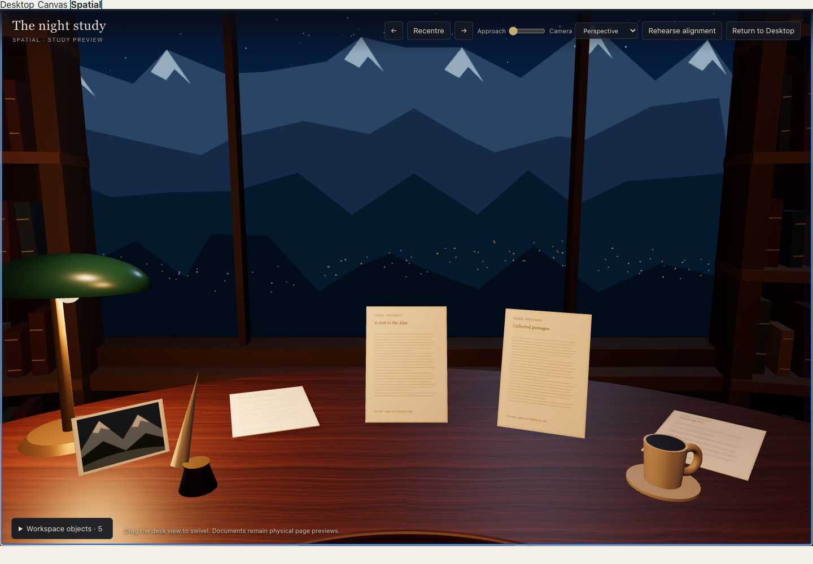
Recommended default. The desk, lamp, paper and photograph retain their physical dimensions; peripheral shelves frame the window.
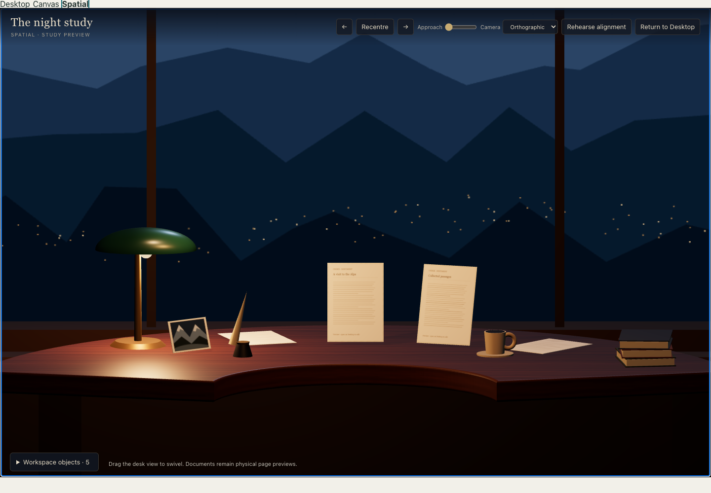
Same scene and placements. Clear, stable proportions, but the desk reads as a flatter architectural display.
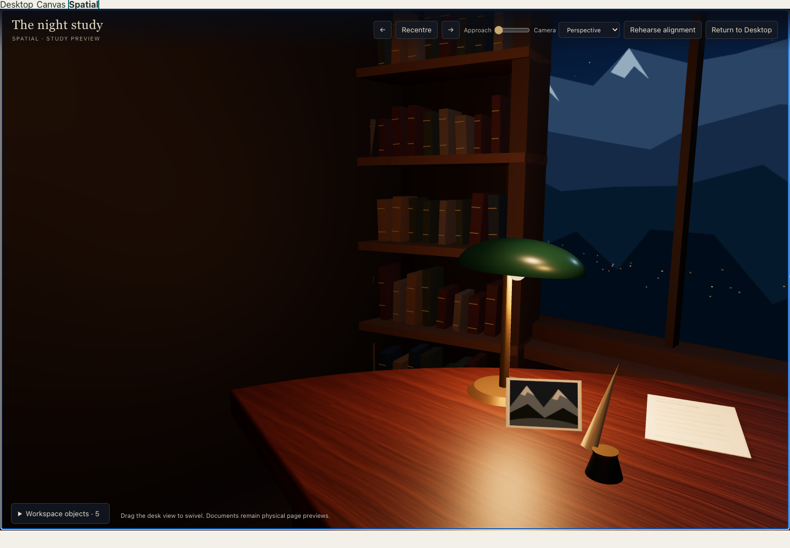
45° seated swivel. The left work area, lamp and flanking shelves remain connected; no walking or object orbit.
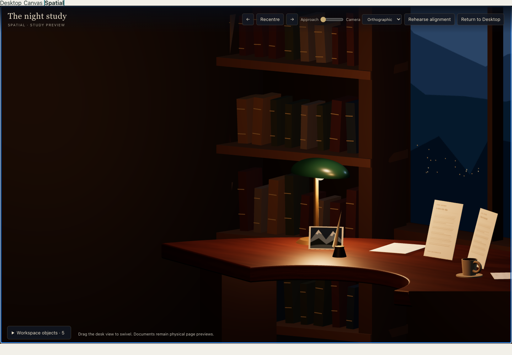
The corresponding orthographic limit, with unchanged object sizes.
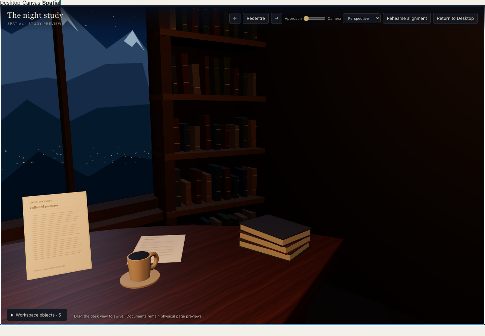
45° seated swivel toward the cup, books and right work area.
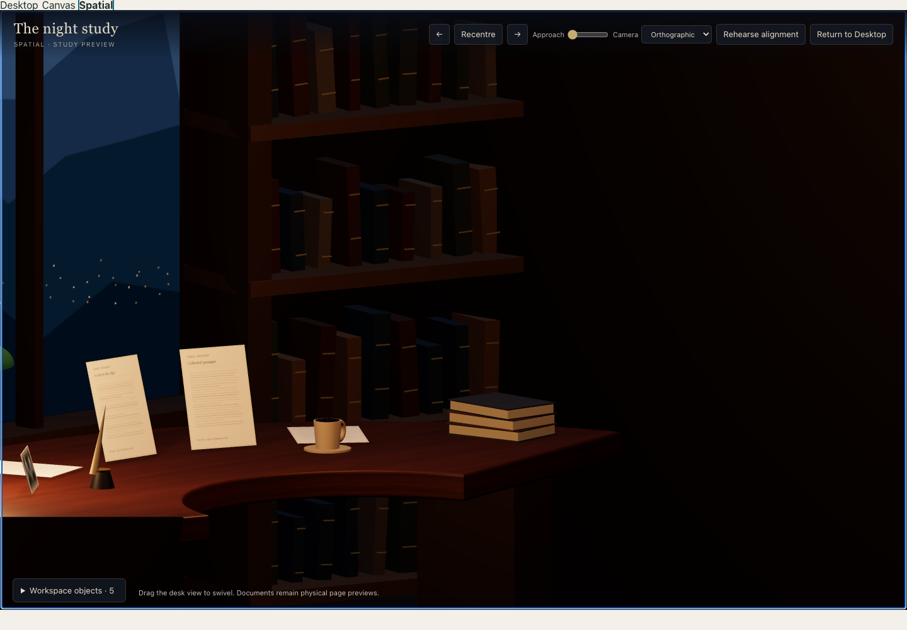
The corresponding orthographic limit.
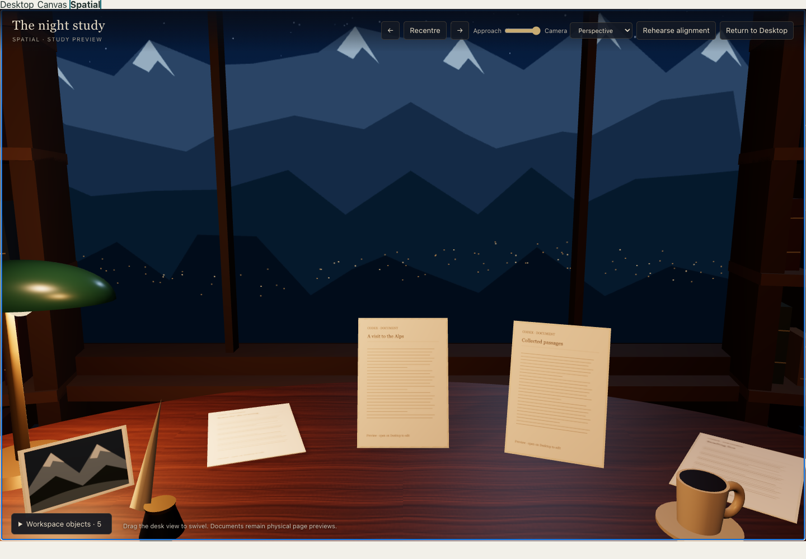
A bounded 16 cm lean toward the work area. It does not enlarge the paper geometry.
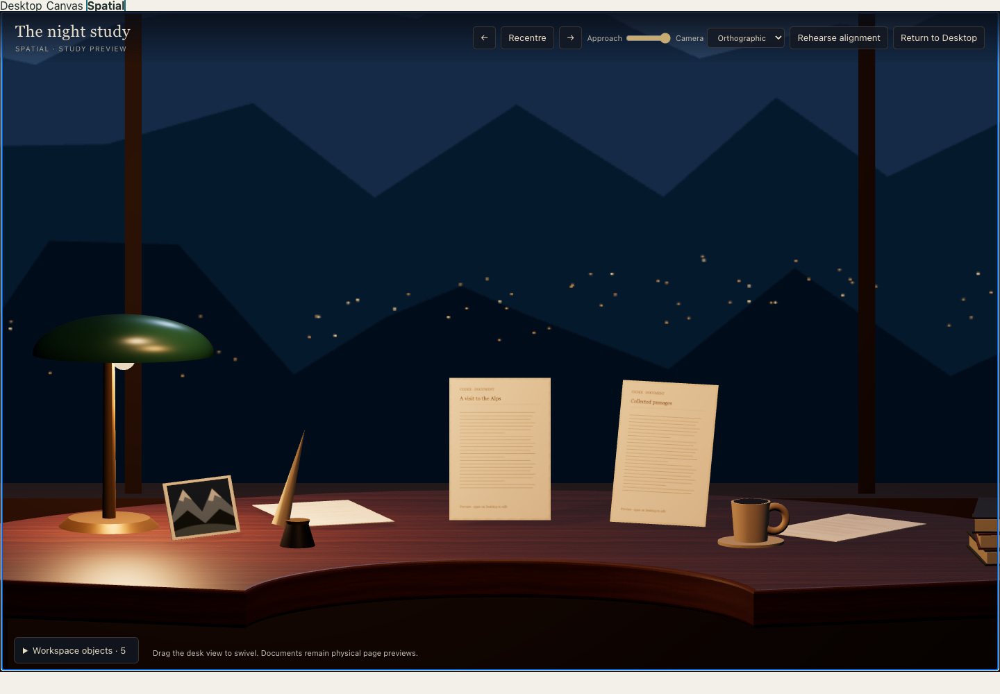
Approach changes orthographic framing span; world objects and placements do not change.
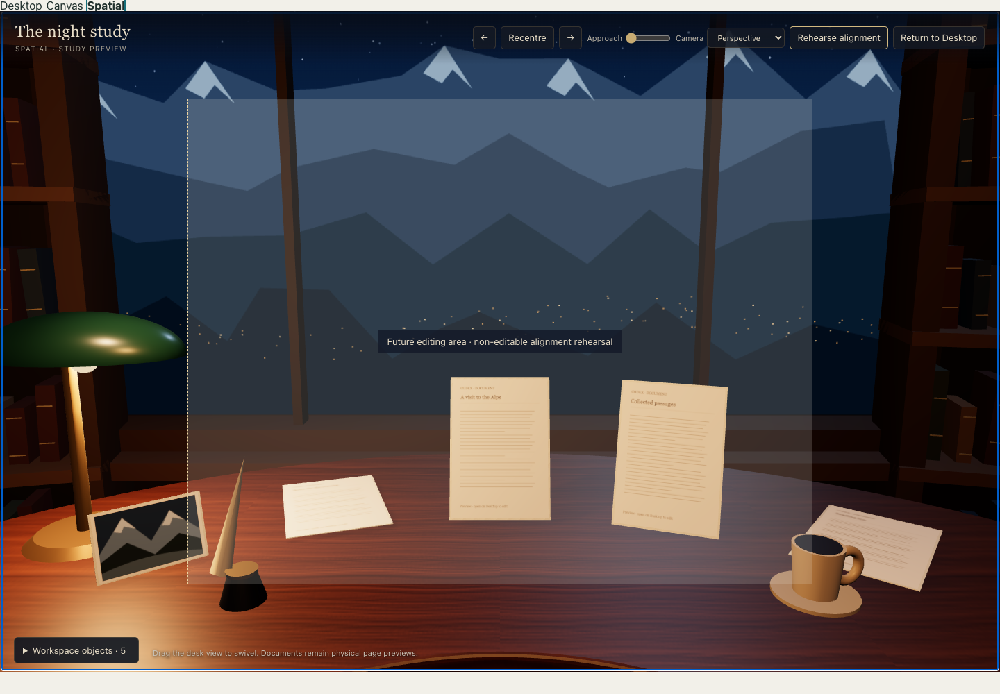
Non-editable world-plane / CSS-rectangle rehearsal. The physical desk remains intact. Raising and animating a real Document are deferred to B.
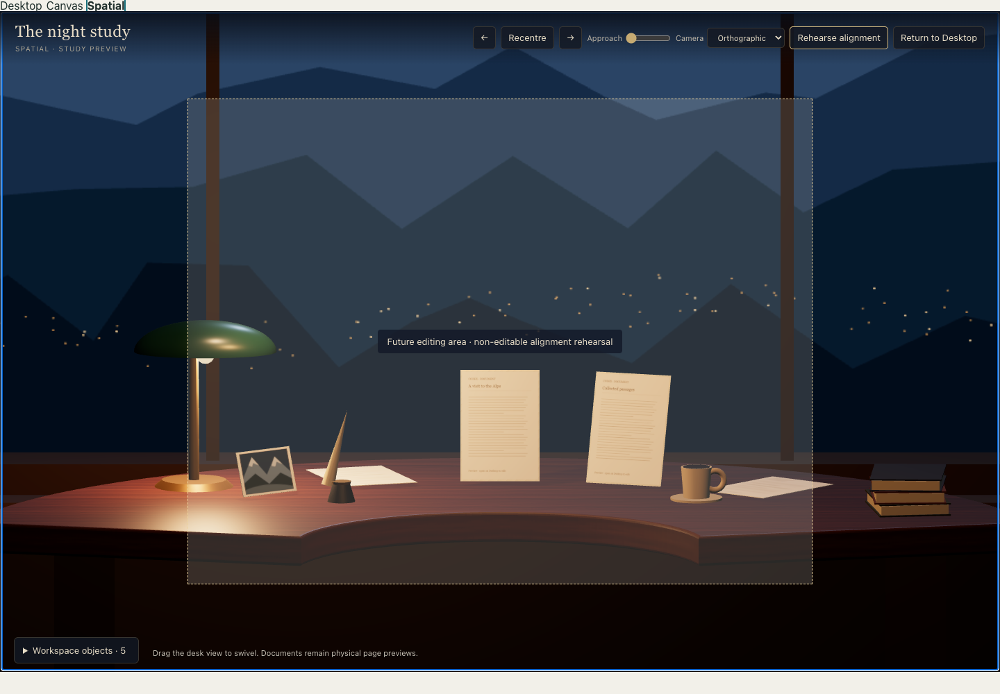
The same rehearsal under orthographic projection.
A smaller viewport; the renderer caps its drawing-buffer pixel ratio at 1.5 while retaining CSS-pixel input coordinates.
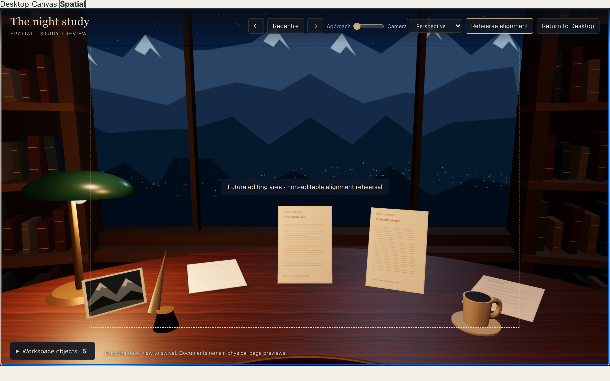
Screen alignment remains independent of drawing-buffer resolution.
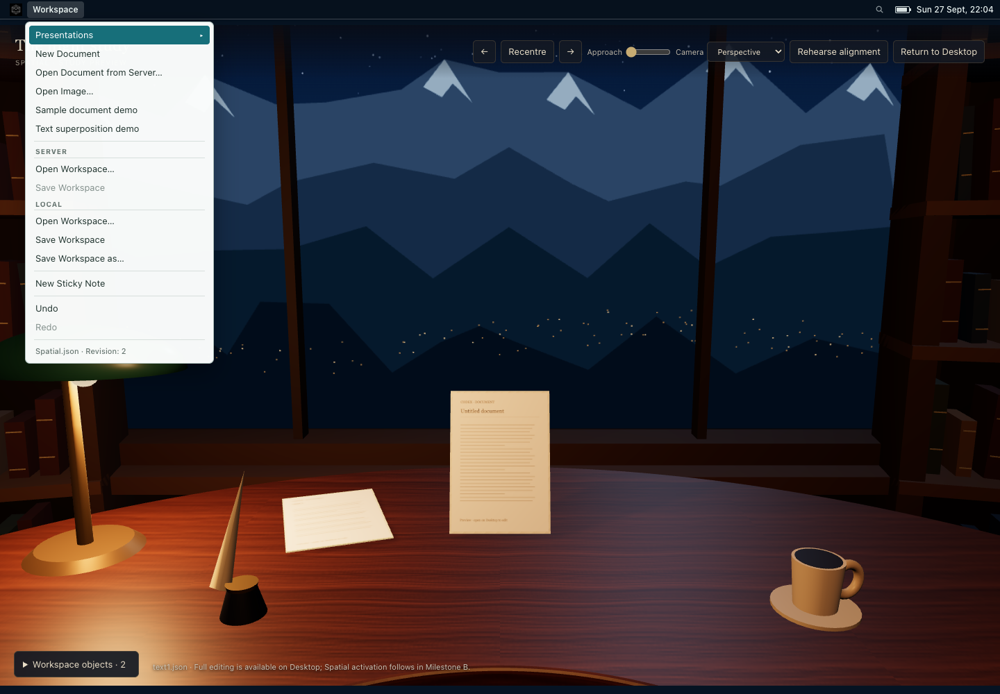
New Document and a real server Document opened through the application menu. No workspace file was required.
The scene canvas was rebuilt after simulated graphics-context loss; the session, content and saved layout were retained.